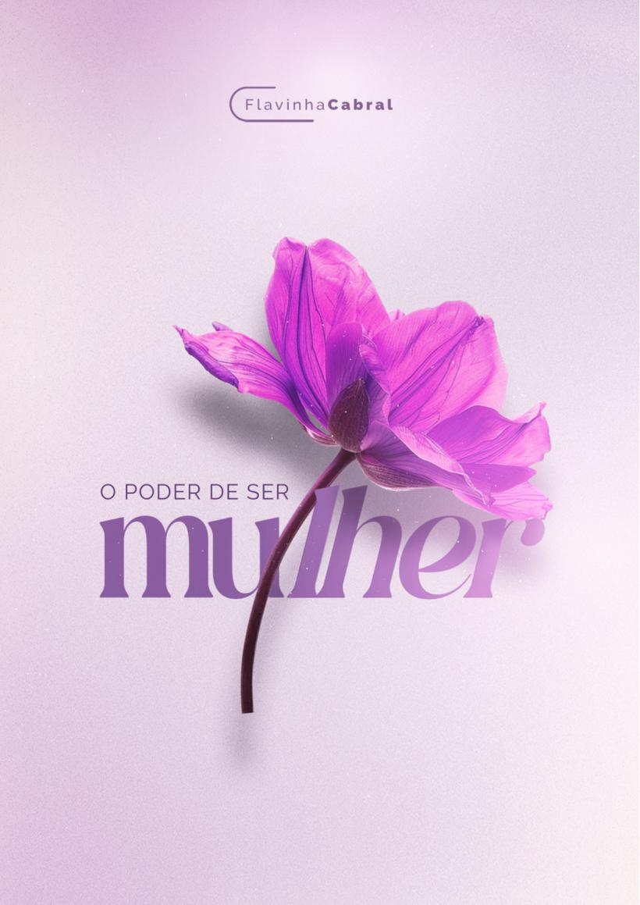
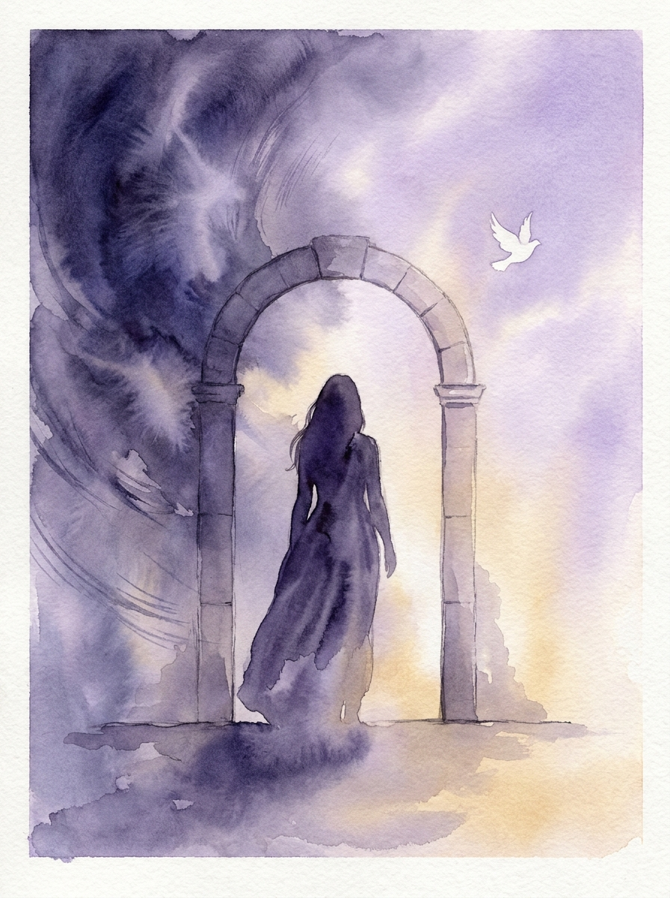
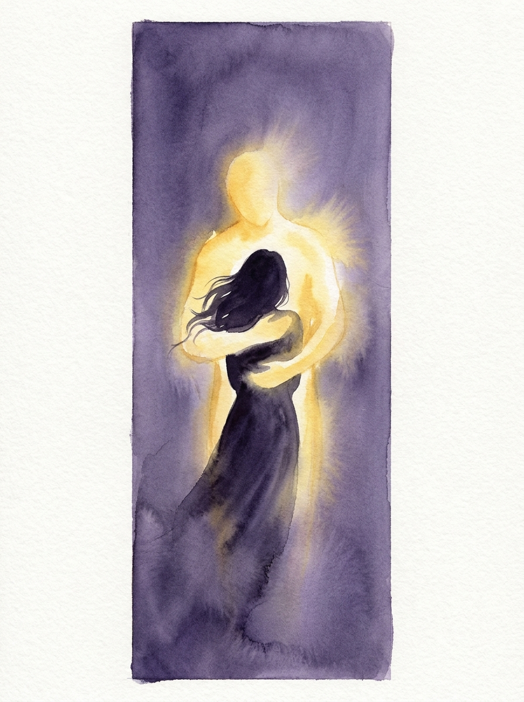
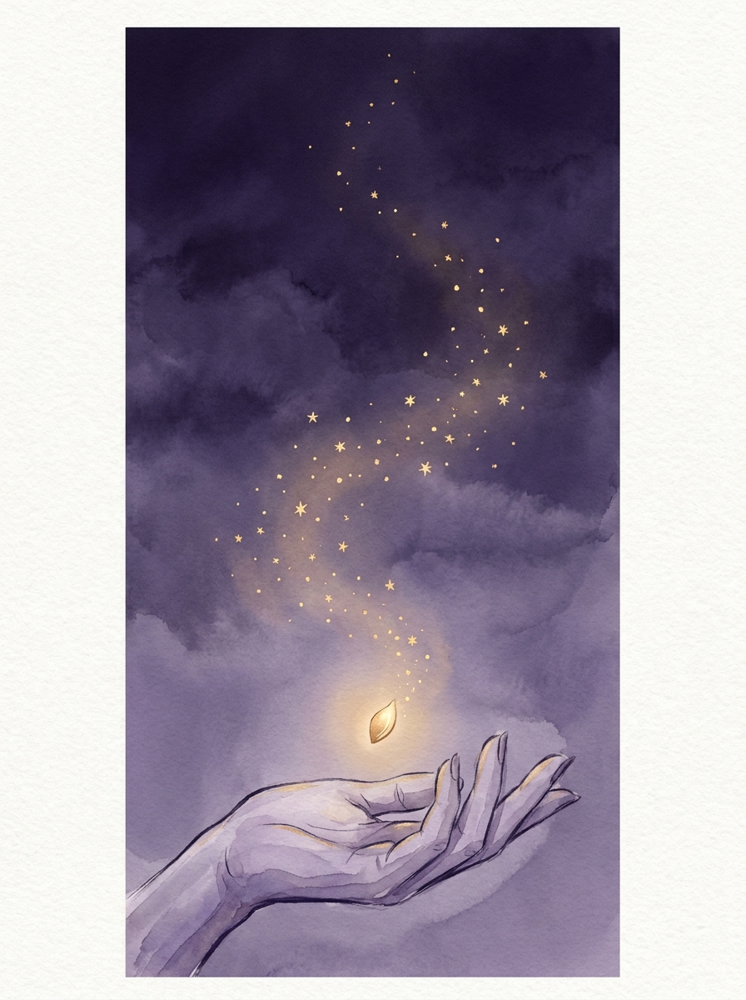
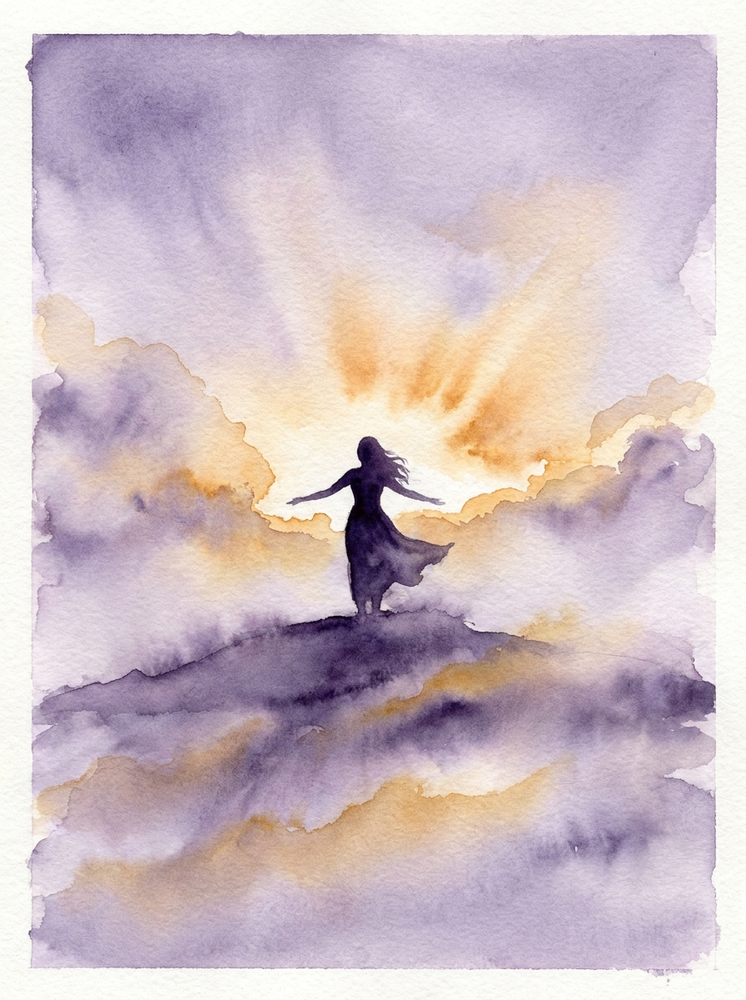
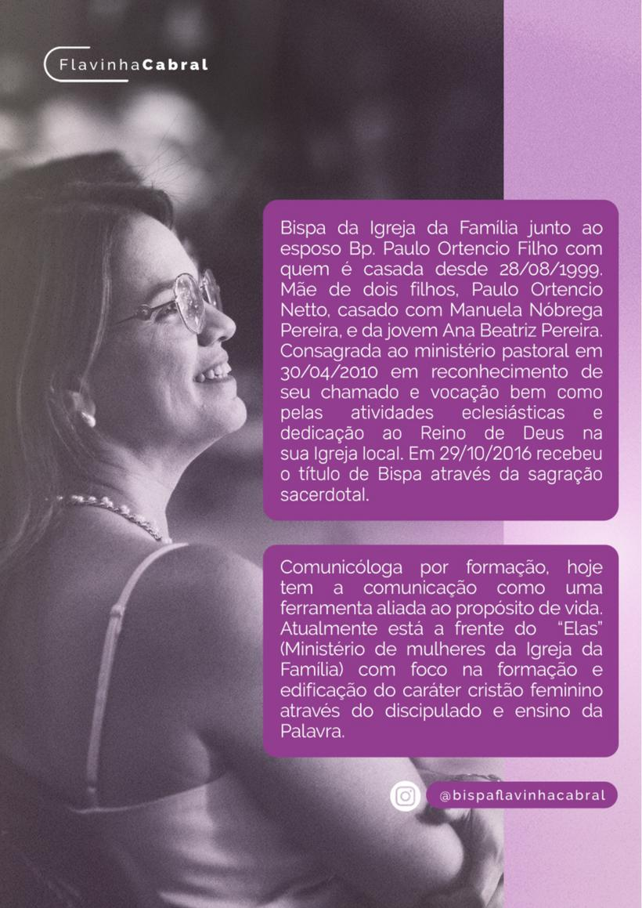

O poder de ser mulher
Toda mulher já sentiu, em algum momento, uma vontade de ser mais forte, mais clara, mais firme diante da própria vida. O mundo tem uma resposta pronta pra essa vontade: conquiste, prove seu valor, dependa só de você. É uma resposta sedutora, e também incompleta.
Este livro nasce do trabalho de Flavinha Cabral sobre o que a Bíblia chama de empoderamento: não a autossuficiência que o mundo vende, mas a força que nasce de uma vida rendida ao Espírito Santo. Cada capítulo caminha por um pedaço dessa diferença, da origem do poder até o jeito como ele se manifesta em casa, na igreja e na sociedade.
Este resumo condensa os sete eixos centrais do material original e devolve, ao final de cada capítulo, uma declaração pensada para ser dita, não só lida. Cada uma vem acompanhada de uma imagem original, construída ao redor da mesma ideia central do capítulo.
Duas Fontes de Poder
A palavra empoderamento virou comum nas últimas décadas, empurrada por movimentos que prometeram, cada um a seu jeito, libertar a mulher de amarras antigas. Houve avanços reais nesse caminho, o direito ao voto, o acesso ao trabalho, a luta contra a violência. Mas junto com os avanços veio também uma ideia que precisa ser examinada com cuidado: a de que o valor de uma mulher se mede pelo que ela conquista sozinha, sem depender de ninguém, nem de Deus.
A Bíblia oferece outra origem para o mesmo poder. Não nega força, coragem ou influência, mas muda a fonte. O empoderamento secular nasce da autossuficiência: eu no centro, minha vontade como bússola, meu esforço como garantia. O empoderamento segundo a Palavra nasce da dependência: Deus no centro, Sua vontade como direção, o Espírito Santo como a força que sustenta. Jeremias descreve com precisão o que acontece com quem confia só na própria força e o que acontece com quem confia no Senhor, e a diferença não é sutil.
Isso não significa recusar tudo que o mundo chama de empoderamento. Significa perguntar, antes de aceitar qualquer definição pronta: essa força vem de onde, e pra onde ela está me levando?
A mesma palavra, duas origens
autossuficiência, mérito próprio, eu no centro da própria história.
dependência de Deus, identidade em Cristo, força que vem do Espírito.

Cheia do Espírito Santo
O verdadeiro poder não vem da força humana, da influência ou da autossuficiência, vem da ação do Espírito Santo numa vida rendida. É Ele quem fortalece, capacita e guia em toda a verdade, concedendo sabedoria, discernimento e ousadia pra cumprir o propósito de Deus. Diferente de um poder passageiro, baseado em esforço próprio, o poder do Espírito transforma de dentro pra fora, trazendo vida, restauração e direção.
Muitas mulheres, hoje, são incentivadas a buscar um empoderamento baseado na autossuficiência, no individualismo, na superação por mérito próprio. É uma busca que cansa, porque depende inteiramente de uma força que se esgota. O poder do Espírito Santo, ao contrário, não se esgota, porque não é gerado por quem o recebe, apenas manifestado através dela. Uma mulher fortalecida pelo Espírito pode ser mãe, profissional, esposa ou líder, o que Deus a chamar para ser, sem carregar o peso de provar isso ao mundo.
Paulo descreve o resultado concreto dessa rendição: amor, alegria, paz, paciência, benignidade, bondade, fidelidade, mansidão e domínio próprio. Não é uma lista de virtudes conquistadas no esforço, é o fruto natural de uma vida guiada pelo Espírito.
O que muda quando o poder vem do Espírito
porque não nasce da própria força, é sustentado por Deus.
porque a identidade já está garantida em Cristo.
amor, paz, paciência, domínio próprio, em vez de sobrecarga.

Segura de Sua Identidade em Cristo
Uma mulher empoderada não se define pelos padrões do seu tempo, mas pela verdade que Deus revelou sobre ela na Sua Palavra. O verdadeiro empoderamento começa quando ela entende que sua identidade e seu valor não estão no que o mundo diz, no que as pessoas pensam, muito menos naquilo que ouviu ainda criança e que a distancia do que Deus pensa. Antes mesmo de você ser criada, Deus já tinha definido quem você é.
O salmista descreve esse cuidado com uma precisão que impressiona: Deus formou cada parte do corpo ainda no ventre, conheceu cada osso antes de qualquer um deles existir, e já tinha registrado cada dia da vida antes que o corpo tomasse forma. Não existe espaço, nessa descrição, pra uma identidade construída aos poucos por aprovação alheia. Existe uma identidade dada, que só precisa ser reconhecida.
Para que essa verdade se torne a base de uma vida, é preciso cultivá-la todos os dias através da comunhão com Deus, da leitura da Palavra e da oração. Ao invés de medir valor por curtidas, reconhecimento profissional ou status de um relacionamento, uma mulher segura em Cristo aprende a celebrar quem Deus a criou pra ser, encontra segurança na verdade de que é filha Dele, e se fortalece na Sua presença, não na própria capacidade.
De onde vem a segurança real
de curtidas, aprovação social ou comparação com outras mulheres.
de uma identidade definida por Deus antes mesmo de você nascer.

Sábia e Virtuosa
O poder de ser mulher se manifesta em ser sábia e virtuosa. O mundo exalta a sabedoria humana, a experiência e o conhecimento intelectual como caminhos pra uma vida bem-sucedida. A Palavra revela outra fonte: a verdadeira sabedoria vem do temor do Senhor e da ação do Espírito Santo em nós. Uma mulher que se rende a Cristo não apenas adquire conhecimento, é transformada em sua maneira de viver, falar, agir e decidir.
Débora, juíza e profetisa de Israel, é um exemplo direto dessa sabedoria em ação. Numa época dominada por homens, ela julgava com justiça e inspirava guerreiros a confiarem na vitória de Deus, e sua liderança não vinha de força humana, mas de submissão ao Espírito Santo. Essa mesma sabedoria não se manifesta só em grandes feitos públicos, se manifesta principalmente no jeito como uma mulher conduz sua vida pessoal e seu lar, capaz de falar com mansidão, agir com paciência e confiar em Deus em vez de ceder à ansiedade.
Abigail é outro retrato dessa sabedoria: diante de um marido insensato, ela interveio com palavras sábias e impediu uma tragédia, trazendo honra à própria casa. Maria, mãe de Jesus, demonstrou a mesma confiança ao responder a um chamado que não compreendia por inteiro: eis aqui a serva do Senhor. Sabedoria bíblica não é acúmulo de informação, é um coração rendido que sabe pedir direção antes de agir.
Onde a sabedoria bíblica aparece
como Provérbios 31 descreve, edificando em vez de destruir.
como Abigail, com palavras que evitam a tragédia.
como Maria, confiando mesmo sem compreender tudo.
Influência Que Deixa Legado
O empoderamento feminino, na perspectiva bíblica, não se trata apenas de força ou independência, se trata de um chamado divino pra influenciar e transformar vidas. Uma mulher empoderada pelo Senhor entende seu valor, vive conforme a Palavra e se torna exemplo pra outras, e o desejo de Deus é que sejamos mulheres de influência, inspirando outras e deixando um legado de fé.
Ester usou sua posição como rainha pra salvar seu povo, numa coragem que nasceu da disposição de arriscar tudo por uma causa maior que ela mesma. Débora liderou Israel com sabedoria. A mulher samaritana, depois de um encontro com Jesus no poço, correu pra contar aos outros o que tinha ouvido, e seu testemunho levou muitos a crerem. Priscila ensinou a Apolo com mais exatidão o caminho de Deus, mostrando que ensinar com sabedoria e graça é também uma forma de influência. Noemi, mesmo em meio à própria dor, orientou e encorajou Rute a construir uma vida nova.
Nenhuma dessas mulheres guardou suas bênçãos só pra si. Uma mulher verdadeiramente empoderada não vive apenas pra si mesma, ela encoraja, ensina e levanta outras mulheres. Vive com integridade, de um jeito que seu testemunho fala mais alto que suas palavras. Ensina e discipula as mais jovens. E entende que uma palavra de ânimo, no tempo certo, pode transformar uma vida inteira.
Quatro formas de influenciar
um testemunho que fala mais alto que qualquer palavra.
discipular com sabedoria as que vêm depois de você.
uma palavra certa pode reescrever o rumo de uma vida.
como Ester, disposta a agir por uma causa maior que si mesma.

Refletindo Cristo em Casa e na Igreja
O empoderamento de uma mulher não se limita ao seu ambiente de trabalho ou à sua posição social, ele tem um reflexo mais amplo, começando em casa. No casamento, uma esposa empoderada pela Bíblia não se define pela submissão passiva nem pela autoridade dominante, se define pelo equilíbrio de uma parceria onde os dois lados se respeitam e se edificam mutuamente. A submissão bíblica, descrita em Efésios, é ato de amor e respeito, correspondida por um amor sacrificial do marido que espelha o de Cristo pela igreja, nunca uma imposição.
Como mãe, a Bíblia valoriza a maternidade como oportunidade de discipular a próxima geração. Ana e Maria, mãe de Jesus, mostraram que uma mãe empoderada é aquela que confia em Deus e ensina Seus caminhos aos filhos. Seja como esposa, mãe ou filha, a mulher cristã fortalece sua família com amor, sabedoria e oração, sendo reflexo do caráter de Cristo dentro do próprio lar.
Esse mesmo chamado se estende ao Corpo de Cristo. Desde os tempos bíblicos, Deus usou mulheres pra edificar Sua igreja: Priscila ensinando com sabedoria, Débora exercendo liderança com coragem, Febe servindo com fidelidade. Uma mulher empoderada pela Palavra entende que sua voz e suas ações podem fortalecer a igreja, seja ensinando, aconselhando, servindo ou liderando com humildade.
O mesmo reflexo, dois lugares
parceria de respeito mútuo, não submissão passiva nem domínio.
voz e dons usados pra edificar o corpo, com humildade.

Refletindo Cristo na Sociedade
A influência da mulher cristã vai além do lar e da igreja. Deus chama as mulheres pra serem luz no mundo, trazendo impacto positivo onde quer que estejam. No trabalho, a mulher empoderada não separa sua fé da sua profissão, trabalha com excelência, ética e um coração disposto a servir. Na comunidade, assim como Ester usou sua posição pra interceder pelo seu povo, uma mulher cristã pode usar sua voz e sua influência pra promover justiça, bondade e transformação na sociedade ao redor.
O verdadeiro empoderamento feminino não está na busca por status ou reconhecimento, está numa vida que reflete Cristo. A mulher que se fortalece no Senhor se torna um pilar pra sua família, um exemplo na igreja e uma influência positiva na sociedade, e o segredo desse poder está na intimidade com Deus, na confiança em Sua Palavra e no uso dos dons que Ele deu pra cumprir Seu propósito.
Deus está chamando cada mulher pra ser exemplo e influência positiva nessa geração, não apenas pelas palavras, mas com a própria vida gerando impacto na vida de outras mulheres, inspirando-as a caminhar com Cristo. Todo empoderamento verdadeiro é fruto de intimidade com Deus, e é reflexo do amor Dele para o mundo. O convite é pra começar hoje, sendo exemplo de empoderamento e influência cristã, no lugar onde você já está.
Onde o chamado se cumpre
excelência e ética, sem separar fé de profissão.
voz usada pra promover justiça e bondade.
exemplo vivo do amor de Deus, começando hoje.

Forte porque rendida
Existem dois jeitos de contar essa história. Um deles diz que força é o que você constrói sozinha: currículo, independência, aprovação conquistada aos poucos. O outro diz que força é o que Deus já colocou em você antes mesmo de você nascer, e que só aparece por inteiro quando você para de tentar carregar tudo pelas próprias mãos.
O empoderamento segundo a Bíblia não compete com ninguém, não precisa provar nada e não se mede por curtida nem por título. Ele nasce de uma mulher que conhece sua identidade em Cristo, que busca sabedoria antes de pressa, e que usa a própria influência para edificar, nunca para dividir.
A pergunta que fica não é se você é capaz. É de onde vem a sua força. Uma vida inteira pode ser vivida em busca da resposta errada. Ou pode começar, hoje, a ser vivida a partir da resposta certa.
Os sete eixos, em uma frase cada
- Meu poder não nasce de mim mesma, nasce da minha dependência de Deus.
- Sou forte porque sou cheia do Espírito Santo, não porque sou autossuficiente.
- Minha identidade já foi definida por Deus antes de qualquer opinião sobre mim.
- Busco sabedoria antes de pressa, e virtude antes de aparência.
- Minha vida influencia outras mulheres, pra edificar, nunca pra dividir.
- Reflito Cristo em casa e na igreja com amor que serve, não que se impõe.
- Sou chamada a ser luz no mundo, começando pelo lugar onde já estou.
